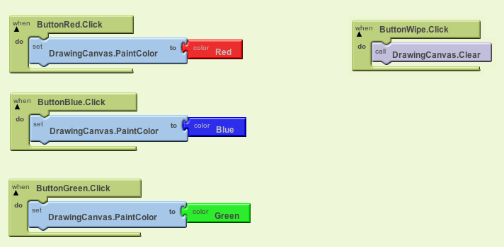
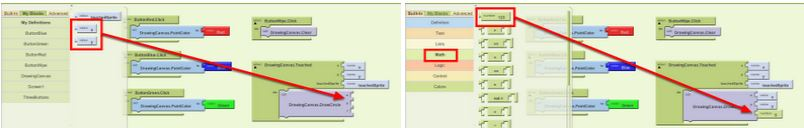
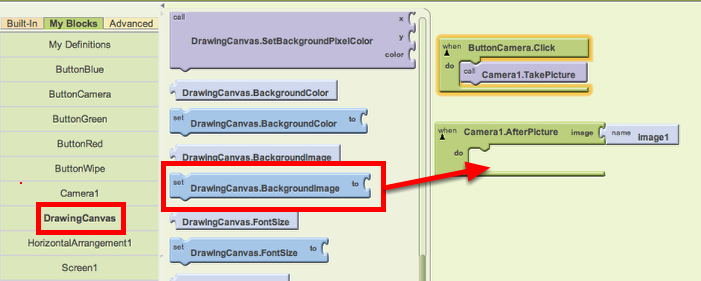
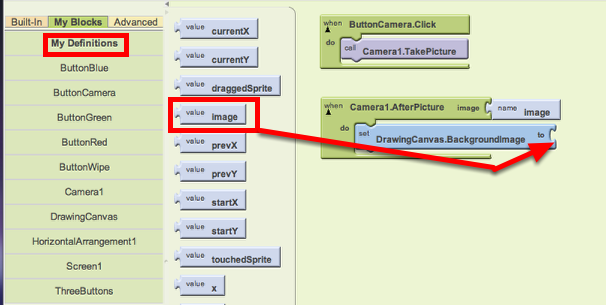

This lesson has three sections: Section 1 | Section 2 | Section 3
BUILD: Blocks Editor
Now it’s time to go into the Blocks Editor and program the components you just added to your project. Navigate to the Blocks Editor window. For information on launching the Blocks Editor see the Setup Instructions.
Step 1: Program the Red Paint Button
From the My Blocks palette, open the ButtonRed drawer and drag over the whenButtonRed.Click block.
Step 2: Make the paint color change
Open the DrawingCanvas drawer. Drag out the set DrawingCanvas.PaintColor to block (you may have to scroll the list of blocks in the drawer to find it) and place it in the "do" section of when ButtonRed.Click block.
Step 3: Set the color to red
Switch to the Built-In palette. Open the Colors drawer and drag out the block for the color Red and put it into the set DrawingCanvas.PaintColor to block.

Step 4: Program the Blue and Green Paint Buttons
Repeat steps 2-4 for the blue and green buttons.
Step 5: Program the Wipe Button
The final button to set up is the Wipe button. In the My Blocks palette, open the ButtonWipe drawer and drag when ButtonWipe.Click. From the DrawingCanvas drawer, drag the call DrawingCanvas.Clear block and place it in the "do" area of the when ButtonWipe.Click block.

Step 6: Draw a dot when the canvas is touched
Open the DrawingCanvas drawer, and drag the when DrawingCanvas.Touched block to the workspace (Note: the three plugs on the right automatically fill in with name blocks called x, y, and touchedSprite).
Drag out a call DrawingCanvas.DrawCircle block from the Canvas drawer and place it in the "do" section of when DrawingCanvas.Touched block.
Step 7 Place the dot in the right spot on the screen: Open the My Definitions drawer and find the blocks for value x and value y. These value blocks were automatically created when you dragged out the touch event handler block, and they hold the x,y coordinates of the point that was touched on the canvas. Plug the value x and value y into the corresponding sockets in the when DrawingCanvas.Touched block. Make sure to drag the value blocks, not the corresponding name blocks; they look very similar.
Under the Built-in palette, open the Math drawer and drag out the number block. Click the number "123" and change it to 5; then, plug that in for the radius slot. For now, our dots will have a radius of 5 pixels.

Step 8: Draw a line when a finger is dragged on the canvas Open the DrawingCanvas drawer, and drag the when DrawingCanvas.Dragged block to the workspace (Note: all plugs on the right automatically fill in with name blocks). Drag out the call DrawingCanvas.DrawLine block and place it under the do area of when DrawingCanvas.Dragged block.
Under the My Definitions drawer, drag out the prevX, prevY, currentX, currentY value blocks and plug them into the corresponding sockets in the DrawingCanvas.Dragged block.

Step 9: Program the Camera Button to take a picture Under the My Blocks palette, open the ButtonCamera drawer, and drag out the when ButtonCamera.Click block. From the Camera1 drawer, drag the call Camera1.TakePicture block and place it under the ButtonCamera.Click block.

Step 10: Change the canvas background image to the image captured by the camera From the Camera1 drawer, drag the when Camera1.AfterPicture block and drop in the work area. Under the DrawingCanvas drawer, drag the SetDrawingCanvas.BackgroundImage block and put it in the Camera1.AfterPicture block.

From the My Definition drawer, drag the image block and place it at the socket of the SetDrawingCanvas.BackgroundImage block.

Done! Try out the app with your phone, tablet, or emulator.
TEST: Phone/Emulator
Tap a color button and tap the screen. A dot with the selected color will appear. If you drag on the screen, a line with the selected color will appear. Notice that unless a color button is tapped, the first drawing color will be black. Tap the wipe button and the screen should clear. Press the Take Picture button and your phone's camera will activate. Snap a picture and the app will return with your picture as its new background.
Continue to the next section of the lesson to learn how to change the size of the dots.